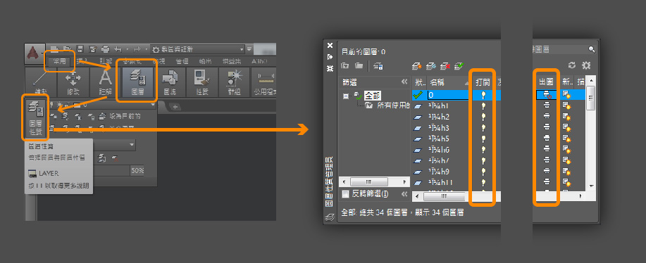
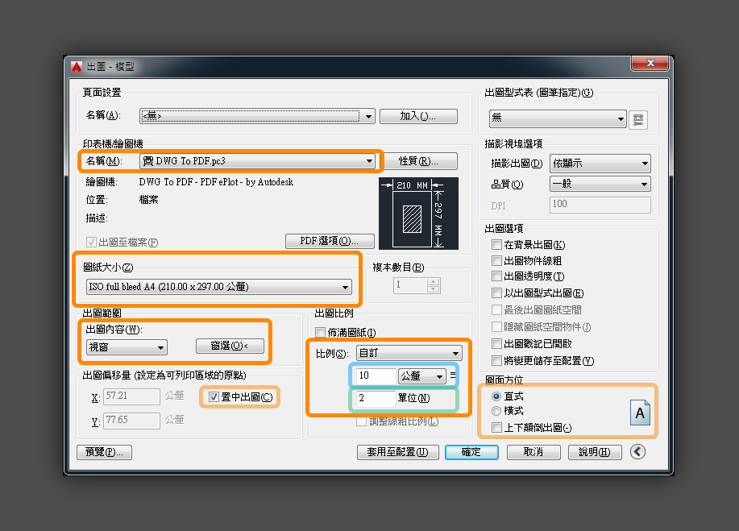

CAD正確比例出圖
整潔的圖面
在出圖之前要先整理圖面，只留下需要的資訊。開啟圖層面板，將無用的圖層關掉。台北市地形圖的圖層名稱通常會有數字代碼，可以參照 圖層表。另外還有 圖例表 可以對照地圖標記。而圖層最右邊的出圖性質常常會是出圖沒有東西的原因，可以全選之後點一下印表機圖式讓他們全部開啟或關閉。

圖層面板開啟位置
按比例出圖的設定
整理完圖面之後按下列印 ( 左上紅色LOGO>列印 或 Ctrl+P ) 會出現列印設定的頁面。

出圖列印設定
印表機名稱
如果電腦沒有連到印表機，通常會用虛擬印表機列印成PDF檔。用「DWG to PDF」或「Adobe PDF」都可以。
圖紙大小
出出來的PDF頁面尺寸，選項會受上面的印表機影響。
出圖比例
上面的10公釐是指出圖後得到的單位，下方的單位是指CAD中的單位，在台北市地形圖中通常是1公尺。圖中的設定是指說出圖的10公釐 (1公分) 會等於 CAD圖中的2單位(2公尺)，也就是1:200。若要出不同的比例，只要改動下面綠色的單位就好了。若要出1:50就是10公釐、0.5單位 ，以此類推。
出圖內容
點選「視窗」之後，CAD會跳至圖面，此時要點兩個對角點以窗選要出圖的範圍，若出圖範圍跟比例算起來會超過圖紙大小，在印表機性直下面的圖示會出現紅框警告。「出圖內容」右邊的窗選可以重新選擇出圖範圍。先更改圖面方位的直式或橫式，讓A呈現直立可以讓選取方向跟縮圖一致。
設定完後可以先再左下角的預覽確認，若跳出註解比例的警告視窗，除非什麼重要的註解，否則直接按繼續即可。左上角的列印機圖示可以直接輸出預覽結果，右邊的叉叉則可以離開預覽回到出圖設定頁面。